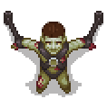

Gunter
| Gunter | |
|---|---|
 | |
Basic Information
| |
Location :
|
Sacrifice Zone |
Role :
|
Last "surviving" zombie |

Gunter is a zombie created by the previous Keeper to help with chores; however, he was too intelligent and was imprisoned indefinitely. He will suggest you raise some zombies to help you around. He can be found down the western hall of the Sacrifice Zone.
Gunter and Zombies were added in the Breaking Dead DLC
Quests
Open the gate
To speak with Gunter, you must have at least 20  with Gerry, and it must be past midnight of the fourth
with Gerry, and it must be past midnight of the fourth  (19.5 days). Anytime after this, when entering the morgue, a cutscene will start, and Gerry will tell you about the old Keeper's helpers and where you might find one. Going to the sacrifice zone at any point after opening it will play a cutscene where you hear moaning and investigate.
(19.5 days). Anytime after this, when entering the morgue, a cutscene will start, and Gerry will tell you about the old Keeper's helpers and where you might find one. Going to the sacrifice zone at any point after opening it will play a cutscene where you hear moaning and investigate.
If you haven't opened the gate to the sacrifice zone or returned there after trying to get the diary, then the cutscenes you haven't seen with Snake will play before the one with Gunter. After speaking with Snake about the dungeon, the cutscene should start immediately with additional dialogue from Snake.
If you enter the morgue after meeting the criteria for the cutscene with Gerry and anything other than the one described above starts, leave and re-enter (walking into the eastern wing of the morgue will do).
Hit Gunter with a sword
Once inside his cell, he will ask you to hit him with a sword because he hasn't felt anything in years. He refuses to talk before you do this.
Making zombies
He doesn't remember the specifics on how zombies are made but gives you some hints. Examining the broken cabinet next to him reveals the
Resurrection table and
Porter station technologies and opening the cabinet reveals 3×
zombie juice. To discover the remaining blueprints, dig up the zombie in the rubble at the passage from the apiary to the forest near the river.
Visit the zombies page for a more detailed guide on these 'willing' co-workers.
Trivia
Despite Gerry warning you never to unchain him, Gunter will remain chained indefinitely. If offered freedom, he will tell you that he kind of likes it there and that his flesh is too rotten to do anything anyway.
Notes
- Implemented on Xbox, May 2019.
| |||||||||||||||||||||||||||||